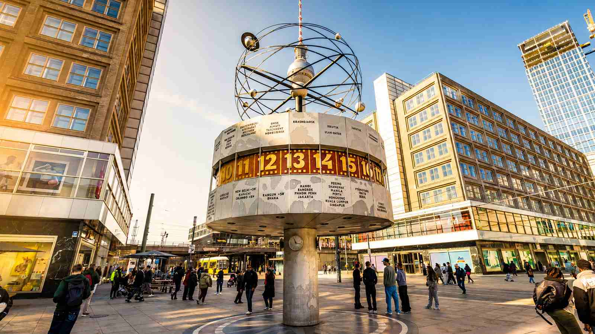

BerlinWalk dayline
Which tour window fits your real Berlin day?
Set the earliest time you can stand at the World Clock and the latest time you must be free near Hackescher Markt.
Use realistic times after luggage, transport and hotel stops. The bands below are planning windows for the current 11:30 and 15:30 calendar options, each allowing about 2 hours plus a 5-minute early arrival.
Use your meeting-point arrival, not your flight or train arrival.
The tour asks guests to arrive 5 minutes before the booked start.The tour ends at Hackescher Markt, not back at Alexanderplatz.
Add separate travel time from Hackescher Markt to your next reservation.Your usable window08:00 to 21:00 dayline
11:30 to 13:30
15:30 to 17:30
Your fit